Calibración de violín
Ajustá y poné a punto un violín, trabajando el puente, las clavijas y los accesorios para optimizar su sonido.
$300.000
6 cuotas sin interés
Antes de llegar a tus manos, cada instrumento atraviesa un proceso donde la paciencia, la precisión y el oficio son los grandes protagonistas.
CONOCÉ EL TALLER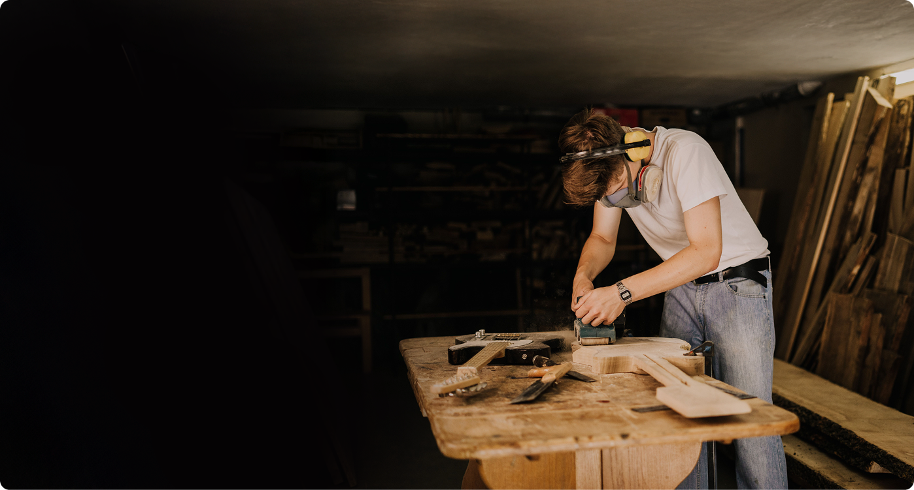
+ NUESTRO MANIFIESTO
No construimos guitarras. Construimos historias. Creemos en el valor de lo hecho a mano, en los detalles que no pueden automatizarse y en las piezas que nacen para acompañar toda una vida.
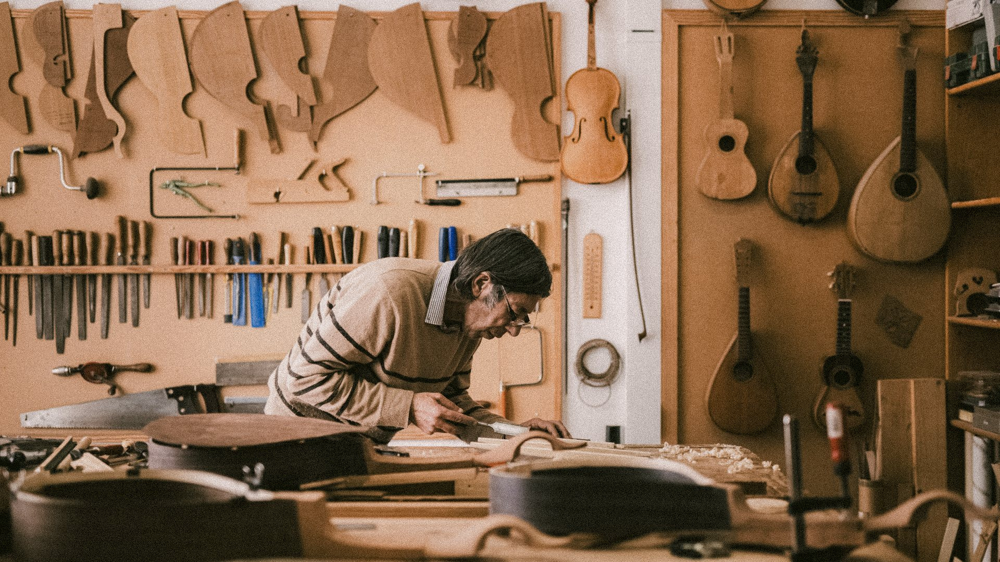
+ QUIÉNES SOMOS
Desde 1988, nos dedicamos a la construcción, reparación y personalización de guitarras. Con el tiempo, el taller incorporó servicios de calibración, restauración y cursos de lutería.
Hoy trabajamos con instrumentos clásicos, acústicos y eléctricos para personas interesadas en aprender el oficio.
+ EN NÚMEROS
0 +
Años de experiencia
0 +
Instrumentos realizados
0 +
Alumnos formados
0 %
Trabajo artesanal
+ ¿POR QUÉ ELEGIRNOS?
Trabajá con herramientas profesionales, materiales reales e instrumentos que recorren cada etapa del oficio. Una experiencia práctica desde el primer día.
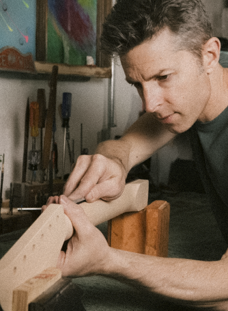
EL VALOR DE LO ÚNICO
Tratá cada bloque de madera como una pieza irrepetible, adaptándote a su veta para liberar su sonido natural.
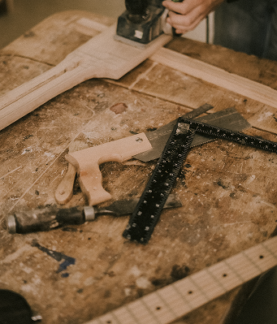
CONEXIÓN ANALÓGICA
El oficio se ensucia las manos. Te damos un banco propio y herramientas para dominar el material desde el primer día.
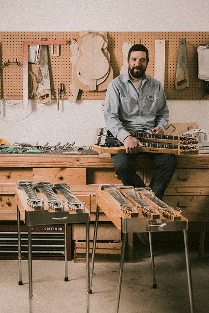
MENTORÍA SIN SECRETOS
Trabajá codo a codo con luthiers en actividad. Es la transmisión directa de la experiencia, de maestro a alumno.
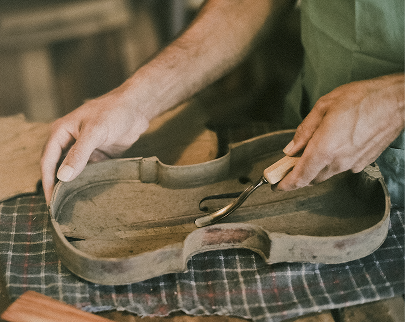
OBSESIÓN POR EL DETALLE
Controlá el milímetro exacto que cambia la acústica y la ergonomía para que el instrumento sea perfecto.
+ DE MAESTRO A APRENDIZ
Ajustá y poné a punto un violín, trabajando el puente, las clavijas y los accesorios para optimizar su sonido.
$300.000
6 cuotas sin interés
Diseñá y construí una guitarra hecha con tus propias manos, recorriendo cada etapa del proceso artesanal.
$560.000
6 cuotas sin interés
Aprendé técnicas de personalización para transformar instrumentos con acabados, colores y detalles únicos.
$210.000
6 cuotas sin interés
+ TESTIMONIOS REALES
Experiencias de quienes pasaron por el taller y vivieron el proceso de aprender un oficio artesanal.
El curso superó mis expectativas. No solo aprendí técnicas de luthería, sino que terminé con una guitarra criolla que refleja el sonido y la estética que buscaba.
Llegué con conocimientos básicos y me fui con la confianza para reparar y calibrar violines correctamente. La práctica en el taller hizo toda la diferencia.
Aprendí a intervenir instrumentos respetando su construcción original y a desarrollar terminaciones que realmente reflejan la identidad de cada proyecto.
Siempre quise construir un instrumento desde cero. El curso combina teoría y práctica de forma muy clara, y terminé con un ukelele completamente funcional.
Cada clase fue un paso más en el proceso. El acompañamiento y la atención al detalle hicieron que el resultado final superara lo que imaginaba.
El enfoque práctico del curso me permitió incorporar técnicas de reparación y ajuste que hoy aplico en mi trabajo con total seguridad.
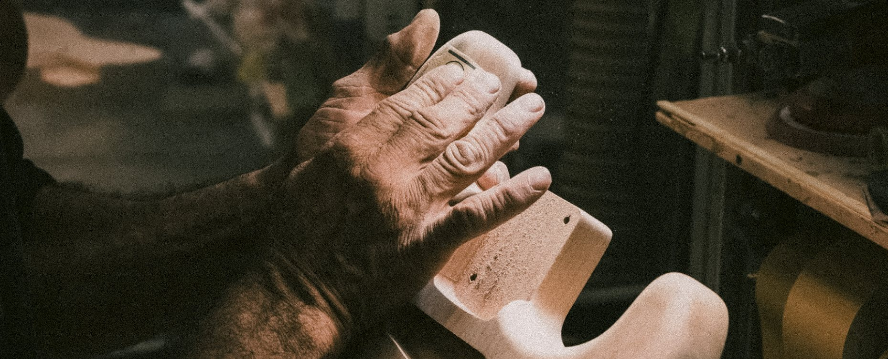
+ MATERIA PRIMA
Cada veta es única y cada elección influye en el carácter del instrumento. Trabajamos con maderas seleccionadas como cedro, palisandro, ébano y caoba, elegidas por su resonancia, estabilidad y belleza natural.
Su combinación define la personalidad, la respuesta y el sonido de cada guitarra.
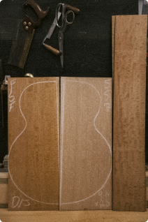
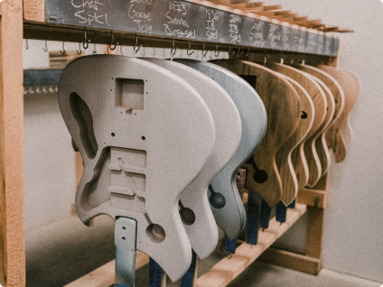
Próximamente.
Próximamente.
Próximamente.
+ PASO A PASO
Cada etapa se realiza de forma manual y se controla para garantizar precisión, estabilidad y calidad.
Cada veta es única y cada elección influye en el carácter del instrumento. Trabajamos con maderas seleccionadas como cedro, palisandro, ébano y caoba, elegidas por su resonancia, estabilidad y belleza natural.
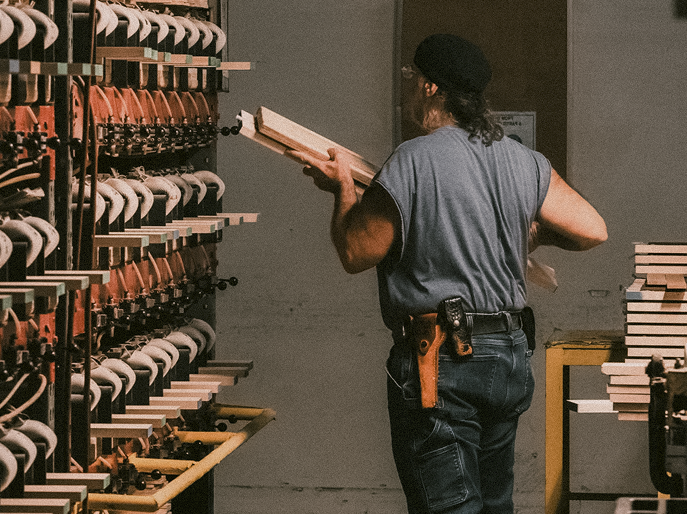
+ INSTRUMENTOS QUE HACEMOS
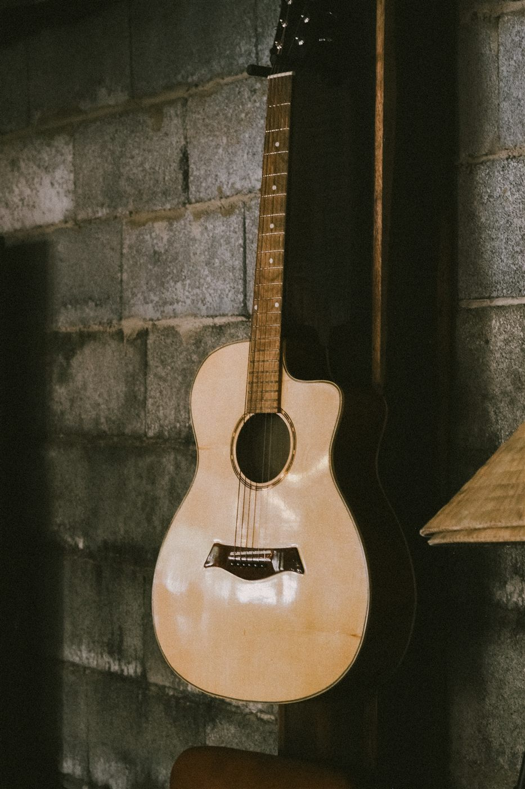
Guitarra acústica
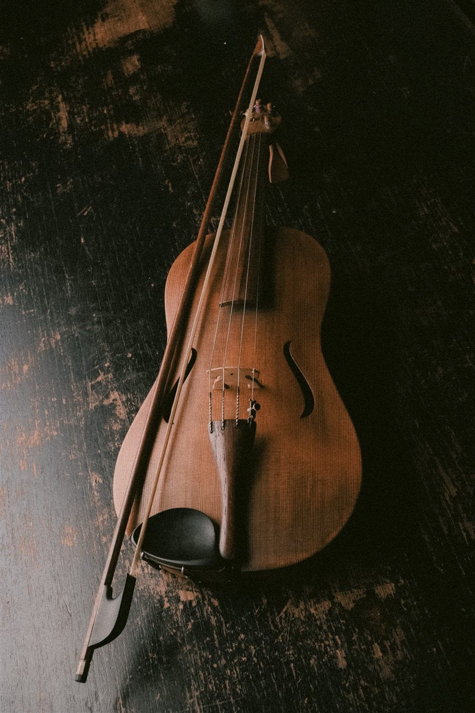
Violín

Guitarra eléctrica
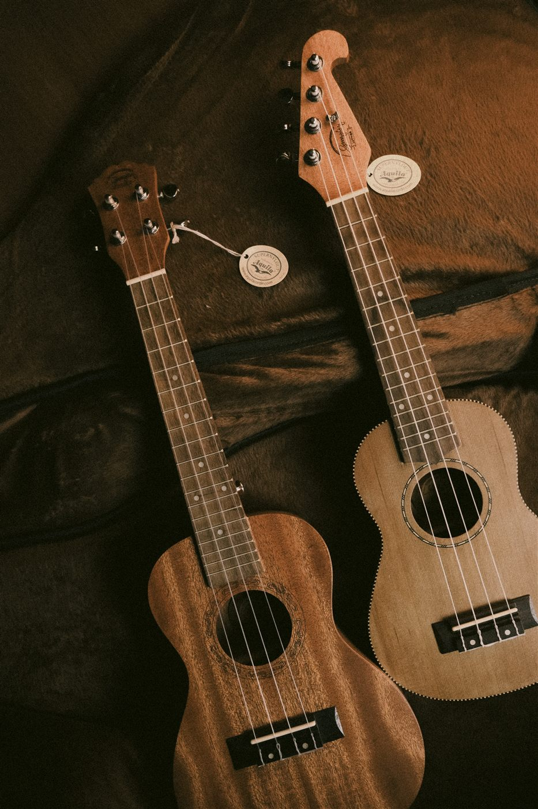
Ukelele
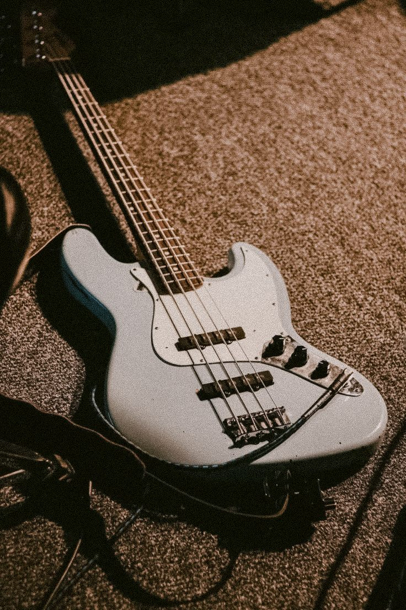
Bajo eléctrico
Trabajamos junto a cada músico para crear guitarras con identidad, carácter y un sonido propio.
SOLICITAR PRESUPUESTO